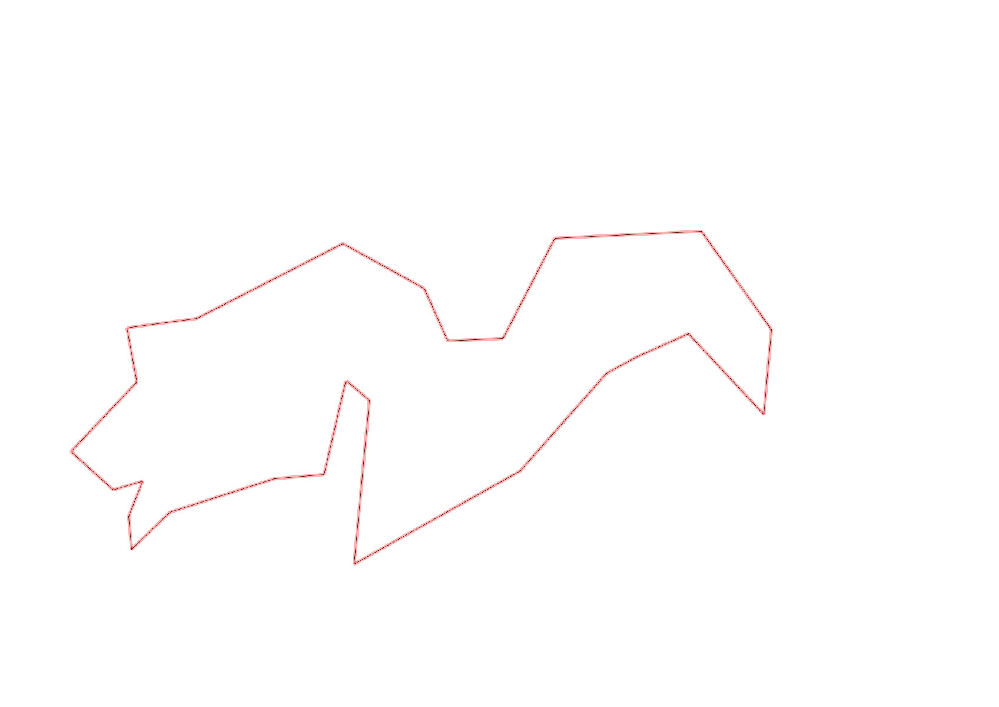
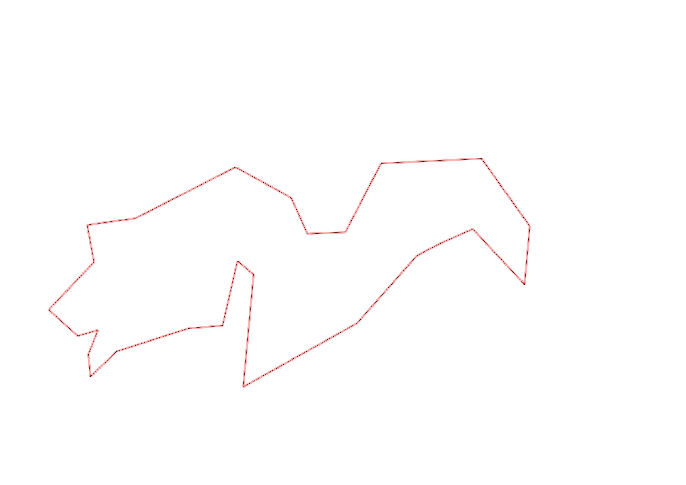

| Control |
Points |
Time Punched |
Distance |
Your Time |
Pace |
Place |
Fastest Time |
Median Time |
% Behind Fastest |
| 38 |
30 |
|
0.2 |
0:00:54 |
04:30 |
2 / 3 |
0:00:43 |
0:00:54 |
25% |
| 60 |
60 |
|
0.11 |
0:00:42 |
06:21 |
1 / 19 |
0:00:42 |
0:00:57 |
0% |
| 41 |
40 |
|
0.23 |
0:01:52 |
08:06 |
4 / 7 |
0:01:41 |
0:01:52 |
10% |
| 40 |
40 |
|
0.11 |
0:00:46 |
06:58 |
2 / 24 |
0:00:45 |
0:01:00 |
2% |
| 71 |
70 |
|
0.07 |
0:00:45 |
10:42 |
2 / 12 |
0:00:34 |
0:01:00 |
32% |
| 54 |
50 |
|
0.08 |
0:00:55 |
11:27 |
24 / 33 |
0:00:27 |
0:00:45 |
103% |
| 69 |
60 |
|
0.07 |
0:01:27 |
20:42 |
4 / 20 |
0:01:00 |
0:01:56 |
45% |
| 53 |
50 |
|
0.12 |
0:01:39 |
13:45 |
8 / 26 |
0:01:16 |
0:01:51 |
30% |
| 44 |
40 |
|
0.2 |
0:01:17 |
06:25 |
6 / 22 |
0:00:39 |
0:01:40 |
97% |
| 32 |
30 |
|
0.12 |
0:00:57 |
07:55 |
5 / 22 |
0:00:43 |
0:01:19 |
32% |
| 63 |
60 |
|
0.15 |
0:01:19 |
08:46 |
6 / 25 |
0:01:05 |
0:01:29 |
21% |
| 107 |
100 |
|
0.35 |
0:03:05 |
08:48 |
6 / 22 |
0:02:14 |
0:03:49 |
38% |
| 57 |
50 |
|
0.2 |
0:05:53 |
29:25 |
18 / 22 |
0:01:54 |
0:03:53 |
209% |
| 92 |
90 |
|
0.12 |
0:02:10 |
18:03 |
1 / 18 |
0:02:10 |
0:04:22 |
0% |
| 47 |
40 |
|
0.12 |
0:04:19 |
35:58 |
8 / 16 |
0:01:07 |
0:04:40 |
286% |
| 123 |
20 |
|
0.24 |
0:02:41 |
11:10 |
3 / 5 |
0:02:23 |
0:02:41 |
12% |
| 109 |
100 |
|
0.31 |
0:02:32 |
08:10 |
4 / 7 |
0:02:09 |
0:02:32 |
17% |
| 52 |
50 |
|
0.26 |
0:02:22 |
09:06 |
3 / 6 |
0:02:01 |
0:02:27 |
17% |
| 46 |
40 |
|
0.18 |
0:03:07 |
17:18 |
3 / 3 |
0:01:32 |
0:02:41 |
103% |
| 49 |
40 |
|
0.23 |
0:02:43 |
11:48 |
6 / 6 |
0:01:50 |
0:02:11 |
48% |
| 64 |
60 |
|
0.12 |
0:00:58 |
08:03 |
6 / 8 |
0:00:53 |
0:00:55 |
9% |
| 48 |
40 |
|
0.07 |
0:01:01 |
14:31 |
8 / 9 |
0:00:34 |
0:00:47 |
79% |
| 37 |
30 |
|
0.28 |
0:03:55 |
13:59 |
3 / 4 |
0:03:12 |
0:03:43 |
22% |
| 61 |
60 |
|
0.4 |
0:04:07 |
10:17 |
1 / 2 |
0:04:07 |
0:05:24 |
0% |
| 127 |
20 |
|
0.35 |
0:05:44 |
16:22 |
2 / 2 |
0:05:42 |
0:05:43 |
0% |
| Finish |
0 |
|
0.06 |
0:00:36 |
10:00 |
5 / 8 |
-1 day, 23:05:57 |
0:00:35 |
-99% |
Total Distance Covered: 4.75km
Points Scored: 1270
Late Penalty: 0
Final Score: 1270
Total Time: 0hours 57minutes 46seconds
Efficiency: 267.37 points/km
 
